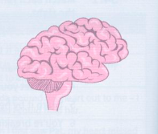

Brain, mind, blood and guts (Bộ não, tâm trí, máu và lòng dũng cảm)
Brain (Bộ não)
Nếu bạn have something on the brain (thân mật) [luôn nghĩ về điều gì], bạn không thể ngừng suy nghĩ hoặc nói về một điều cụ thể nào đó.
Nếu bạn pick someone's brains [hỏi ý kiến/tham khảo ý kiến của ai], bạn hỏi xin thông tin hoặc lời khuyên từ một người hiểu biết nhiều hơn bạn về vấn đề đó.
Cụm từ the brain drain [chảy máu chất xám] được dùng để chỉ sự di chuyển của những người có trình độ chuyên môn cao và được đào tạo tốt từ đất nước của họ sang một đất nước khác nơi họ được trả lương cao hơn.

Mind (Tâm trí)
| Thành ngữ | Nghĩa | Ví dụ |
|---|---|---|
| be a load/weight off your mind [trút bỏ được gánh nặng tâm lý] | cảm thấy nhẹ nhõm vì nỗi lo lắng đã được gỡ bỏ | Biết tin anh ấy an toàn đã giúp tôi load off my mind (nhẹ cả người / trút bỏ được gánh nặng tâm trí). |
| have/keep an open mind [giữ cái nhìn khách quan/cởi mở] | chờ cho đến khi có đầy đủ thông tin thực tế trước khi đưa ra nhận định | Thủ tướng đang keeping an open mind (giữ cái nhìn khách quan) cho đến khi báo cáo được hoàn thành. |
| have a mind of its own [tự hoạt động theo ý nó] | (nói về máy móc) hoạt động không theo ý muốn của bạn | Chương trình soạn thảo văn bản của tôi dường như have a mind of its own (tự hoạt động theo ý nó). |
| make up your mind [quyết định] | quyết định | Tôi đã made up my mind (quyết định) rời đi. Tôi đã mind's made up! (quyết định xong rồi!) Tôi sẽ rời đi. |
| put/set someone's mind at rest [làm ai đó yên lòng] | giúp ai đó ngừng lo lắng | Nếu điều đó giúp bạn put your mind at rest (yên tâm), tôi sẽ gọi điện về nhà mỗi ngày. |
| at the back of your mind [ở trong tiềm thức] | luôn hiện hữu trong tâm trí bạn dù bạn không dành quá nhiều thời gian nghĩ về nó | Ý nghĩ về việc phải sớm đưa ra quyết định luôn ở at the back of my mind (trong tiềm thức của tôi). |
| in your mind's eye [trong ký ức/trí tưởng tượng] | trong trí tưởng tượng hoặc ký ức của bạn | Trong mind's eye (ký ức của tôi), tôi vẫn có thể nhìn thấy ngôi nhà nơi mình đã lớn lên. |
Blood and guts (Máu và lòng dũng cảm)
Nếu một bộ phim được cho là đầy blood and guts* (thân mật) [đầy cảnh chém giết/bạo lực], điều đó có nghĩa là bộ phim đó rất bạo lực.
Nếu một việc gì đó được thực hiện in cold blood [máu lạnh/tàn nhẫn], hoặc theo cách cold-blooded [máu lạnh], điều đó có nghĩa là nó được thực hiện một cách tàn nhẫn, có kế hoạch và không có cảm xúc. Thành ngữ này liên kết mạnh mẽ với các động từ kill (giết) và murder (sát hại).
Nếu việc bắt ai đó kể hoặc đưa cho bạn cái gì khó like getting blood out of a stone [như vắt cổ chày ra nước / cực kỳ khó khăn], điều đó có nghĩa là việc đó rất khó thực hiện.
Nếu bạn nói mình có một gut feeling/reaction [trực giác / phản ứng theo bản năng], ý bạn là cảm xúc hoặc phản ứng đó mang tính bản năng.
Nếu bạn slog/sweat/work your guts out (thân mật) [làm việc đến kiệt sức / bán mạng], nghĩa là bạn làm việc cực kỳ chăm chỉ.
* Guts là một từ thân mật để chỉ ruột (lòng/lòng mề).